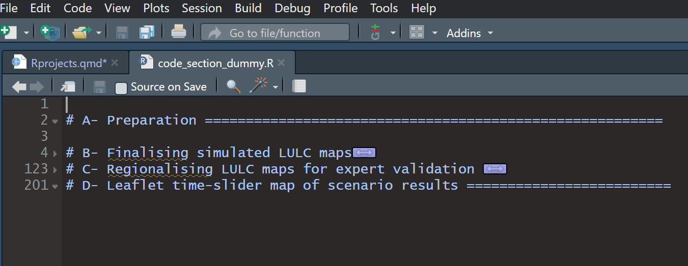
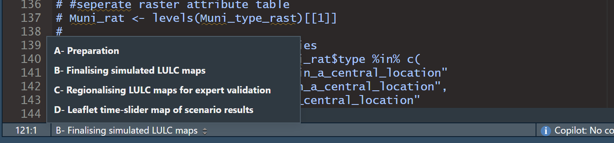
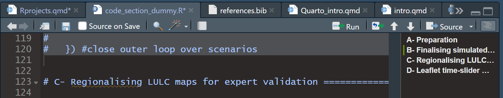

{kind=link}
{kind=link}
{kind=link}
{kind=link}
install.packages("ggplot2")
library(ggplot2)
setwd("C:/Users/ben/path/that/only/I/have")Reproducible Research with  and
and  : Workflows for projects and publications
: Workflows for projects and publications
A workshop presented at the Landscape 2024 conference, Berlin

This image highlights some the key concepts we will discuss in the workshop, which have been divided into seperate sections:
- Background: Some introductory information on why reproducible and transparent research is important.
- Research projects with R: Starting from the basics to develop good practice for creating research projects with R, focusing on some features of Rstudio as an Integrated Development Environment that can help ensure your work is reproducible.
- Workflows for reproducibility: Here we present three workflows of differing levels of complexity and discusses how they can be combined and which might be best given the research needs.
- Quarto: Section 4 presents how the open-source scientific and technical publishing system can be used for numerous academic activities including preparing manuscripts.
- Guided exercises: Now it’s time to get hands-on with some guided exercises to put into practice some of the concepts we have discussed.
- Resources: A collection of resources that we find particularly helpful in our own journey towards reproducible research.
1 Background
About us
We are four researchers from the research group Planning of Landscape and Urban Systems (PLUS) at ETH Zürich. Click on the social icons below our pictures to find out more about our individual research or get in touch with us.
What is reproducible research?
- Ability to replicate results:
- Others can reproduce the results given only the original data, code, and documentation (Essawy et al. 2020)
- Starts with planning:
- Reproducibility begins with organized data management and sound planning before any analysis is conducted.
- Consistent data storage:
- Data should be backed up regularly and stored in multiple locations to prevent loss and ensure accessibility.
- Clear documentation:
- Metadata and well-organized files are essential for interpreting and reproducing research, ensuring clarity and usability.
- Version vontrol:
- Using version control systems helps track changes and maintain a record of the project’s evolution, aiding in reproducibility.
- Standardized formats:
- Data should be stored in nonproprietary, portable formats to ensure broad accessibility and long-term usability.
- Open access:
- Data and code should be publicly available in accessible repositories to support transparency and wider use in the scientific community.
Why strive for reproducible research?
Advantages for your research
- Some fields have suffered a ‘replication crisis’:
- In some cases headline results unable to be reproduced using reported data and methods: Lowers trust in science
- Personal reference:
- Simplifies the process of recalling how and why specific analyses were performed, making it easier to explain your work to collaborators, supervisors, and reviewers.
- Efficient modifications:
- Simplifies the process of adjusting analyses and figures, saving time when supervisors, collaborators, or reviewers request changes.
- Streamlined future projects:
- Facilitates the re-use of code and organizational systems for similar tasks in new projects, making them simpler and faster to execute.
- Demonstrates rigor and transparency:
- Enhances trust in your work by allowing others to verify the accuracy of your methods, improving peer review and reducing the risk of errors or accusations of misconduct.
- Increases impact and citations:
- Boosts citation rates by enabling others to reuse your code and data, allowing your research to have a greater influence and be cited in a wider range of contexts.
Advantages for other researchers
- Facilitates learning:
- Provides others with a head start by sharing data and code for easier learning and faster analysis.
- Enables reproducibility:
- Makes it easier for others to reproduce and build upon your work, supporting stronger and more compatible research.
- Error detection:
- Helps others identify and correct mistakes, protecting the scientific community from errors.
Alston, J. M., and J. A. Rick. 2021. A Beginner’s Guide to Conducting Reproducible Research. The Bulletin of the Ecological Society of America 102(2). https://doi.org/10.1002/bes2.1801.
Why
- Open source accessibility:
- Freely available to everyone, eliminating cost barriers and promoting inclusive access to research tools.
- Comprehensive documentation:
- Encourages thorough documentation, making it easier to track and replicate analyses across different projects.
- Integrated version control:
- Seamlessly integrates with version control systems, ensuring that changes are tracked and reproducibility is maintained.
- Consistency across platforms:
- Provides a stable environment that works consistently across different operating systems, enhancing reproducibility.
- Broad community support:
- Backed by a large, active community that contributes to continuous improvements, making it a reliable choice for long-term research projects.
- Flexibility and adaptability:
- Offers a wide range of tools and functions that can be adapted to various research needs, ensuring that diverse research tasks can be handled within a reproducible framework.
Siraji, M. A., and M. Rahman. 2024. Primer on Reproducible Research in R: Enhancing Transparency and Scientific Rigor. Clocks & Sleep 6(1): 1–10. https://doi.org/10.3390/clockssleep6010001.
2 Research projects with R
Let’s start with a definition of what makes a good R project from Jenny Bryan:
A good R project… “creates everything it needs, in its own workspace or folder, and it touches nothing it did not create.” Jenny Bryan[1]
1.
Bryan J (2017) Project-oriented workflow
Now take a look at these lines of code, of which you have probably seen something similar at the top of many an R script:
But what is wrong with these lines?
install.packages("ggplot2")
setwd("C:/Users/ben/path/that/only/I/have")Doing guarantees that the project can be moved around on your computer or onto other computers and will still “just work”.
- Projects with Rstudio
- Environment management
- Implement a logical directory structure
- Break up your process (master script and sub-scripts)
- Write clean code
Rstudio projects
Environment management
- What are environments and why are they needed? (version conflicts/ dependencies etc.
- Intro to renv package for environment management.
Structuring your project directory
- Set up a consistent directory structure: Data/, scripts/, results/ tools/ (not every project will be the same!)
Writing clean code:
General good practice: variable names, use functions for repetive tasks
Script headers (hint: use code snippet)
Code sections
As you may already know braced sections of code (i.e. function definitions, conditional blocks, etc.) can be folded in RStudio by clicking on the small triangle in the margin.
However, an often overlooked feature is the ability to create named code sections that can be also folded, as well as easily navigated between. These can be used to break longer scripts into a set of discrete regions according to specific parts of the analysis. In this regard, another good tip is to give the resulting sections sequential numerical IDs:

Code sections are created by inserting a comment line that contains at least four trailing dashes (-), equal signs (=), or pound signs (#):
# Section One ---------------------------------
# Section Two =================================
# Section Three #############################Alternatively you can use the Code -> Insert Section command. To navigate between code sections you can use the Jump To menu available at the bottom of the editor[2]:
2.
Posit Support (2024) Code folding and sections in the RStudio IDE

Or use the document outline pane in the top right corner of the source pane:

Code styling
lintr vs. styler package
3 Workflows for Reproducibility
4 Quarto
A brief introduction to Quarto
Quatro is a unified authoring framework that allows for the integration of code, written material and a wide variety of interactive visual formats into one publishable finished document.
Quarto allows you to:
Create dynamic content that is updated as your code changes
Numerous thematic settings for high quality formatting including ‘Pandoc’ markdown support for equations and cross-referencing
Publish your work as websites or books
Edit with any text editor including VS Code, RStudio and more
Some of the creative ways in which you can use Quarto is:
1. Visualize and publish interactive plots using html widgets
library(ggplot2)
library(plotly)
p <- ggplot(data = diamonds, aes(x = cut, fill = clarity)) +
geom_bar(position = "dodge")
ggplotly(p)2. Create interactive geo-spatial mapping segments
library(leaflet)Error in library(leaflet): there is no package called 'leaflet'leaflet() %>%
addTiles() %>% # Add default OpenStreetMap map tiles
addMarkers(lng= 8.548, lat=47.376, popup="ETH")Error in addMarkers(., lng = 8.548, lat = 47.376, popup = "ETH"): could not find function "addMarkers"3. Create multi-purpose dashboards to demostrate your research output

5 Guided excercises
R project to Zenodo workflow
6 Resources
{{< include contents/resources.qmd >}